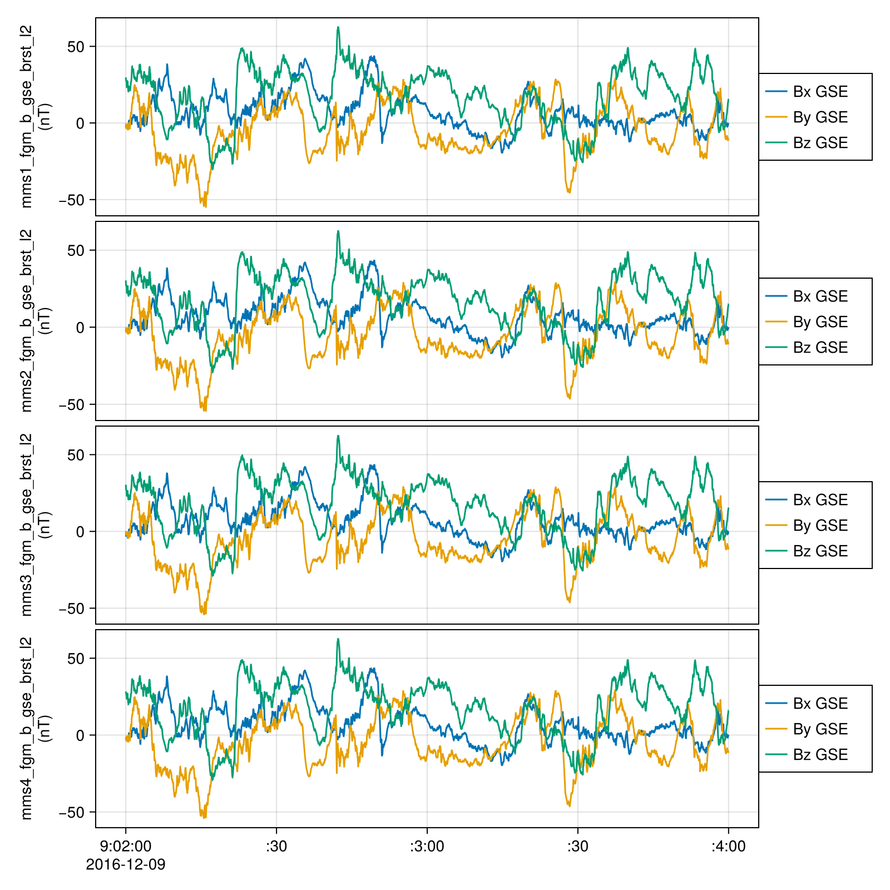
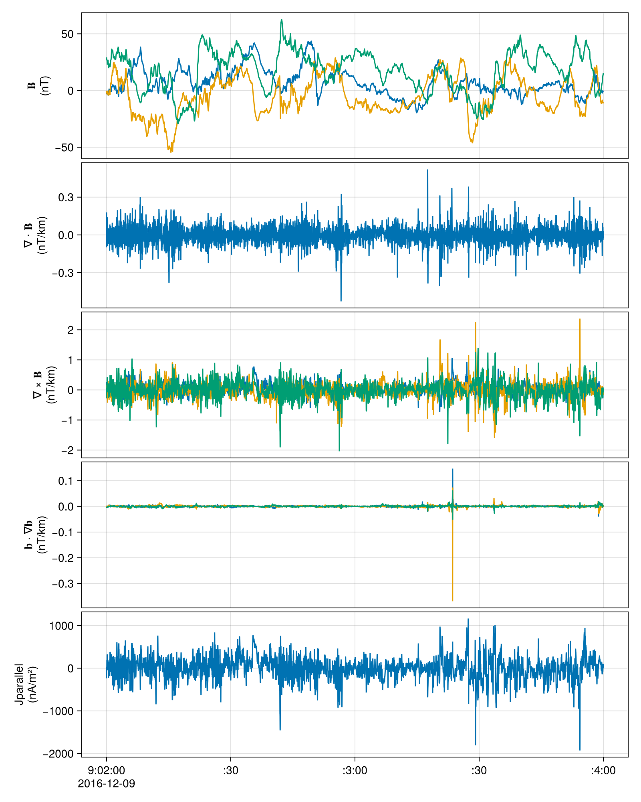

Multi-spacecraft analysis methods
This page demonstrates the use of multi-spacecraft analysis for MMS data. For more details about the package, see MultiSpacecraftAnalysis.jl.
using SPEDAS: tlingradest, setmeta
using Dates
using CDAWeb
using DimensionalData
using CairoMakie, SpacePhysicsMakie
t0 = DateTime("2016-12-09T09:02")
t1 = DateTime("2016-12-09T09:04")
fgm_datasets = ntuple(4) do probe
get_data("MMS$(probe)_FGM_BRST_L2", t0, t1)
end
# Load data from CDF files into memory, MMS FGM data comes with magnitude
fields = ntuple(4) do probe
DimArray(fgm_datasets[probe]["mms$(probe)_fgm_b_gse_brst_l2"])[X(1:3), Ti(t0..t1)]
end
tplot(fields)
mec_datasets = ntuple(4) do probe
get_data("MMS$(probe)_MEC_BRST_L2_EPHT89D", t0, t1)
end
positions = ntuple(4) do probe
DimArray(mec_datasets[probe]["mms$(probe)_mec_r_gse"])[Ti(t0..t1)]
end
out = tlingradest(fields, positions)┌ 3×15358 DimStack ┐
├──────────────────┴───────────────────────────────────────────────────── dims ┐
↓ Y Sampled{Int64} Base.OneTo(3) ForwardOrdered Regular Points,
→ Ti Sampled{CommonDataFormat.TT2000} [2016-12-09T09:02:00.011, …, 2016-12-09T09:03:59.989] ForwardOrdered Irregular Points
├────────────────────────────────────────────────────────────────────── layers ┤
:Rbary eltype: Float64 dims: Y, Ti size: 3×15358
:Bbc eltype: Float64 dims: Y, Ti size: 3×15358
:Bmag eltype: Float64 dims: Ti size: 15358
:LGBx eltype: Float64 dims: Y, Ti size: 3×15358
:LGBy eltype: Float64 dims: Y, Ti size: 3×15358
:LGBz eltype: Float64 dims: Y, Ti size: 3×15358
:div eltype: Float64 dims: Ti size: 15358
:curl eltype: Float64 dims: Y, Ti size: 3×15358
:curv eltype: Float64 dims: Y, Ti size: 3×15358
:R_c eltype: Float64 dims: Ti size: 15358
└──────────────────────────────────────────────────────────────────────────────┘using LinearAlgebra
using Unitful
unitify(x, unit) = x isa Quantity ? x : x * unit
"""
Calculate the parallel component of current density with respect to magnetic field, given `𝐁` and Curl of magnetic field vector `curl𝐁`.
"""
function jparallel(𝐁, curl𝐁)
𝐁 = unitify.(𝐁, u"nT")
curl𝐁 = unitify.(curl𝐁, u"nT/km")
J_parallel = dot(curl𝐁, 𝐁) / norm(𝐁) / Unitful.μ0
return J_parallel |> u"nA/m^2"
end
jparallel(B::AbstractMatrix, curl𝐁::AbstractMatrix; dim = 2) = jparallel.(eachslice(B; dims = dim), eachslice(curl𝐁; dims = dim))
jp = jparallel(out.Bbc, out.curl)
jp = setmeta(jp, ylabel = "Jparallel\n(nA/m²)")
tplot((out.Bbc, out.div, out.curl, out.curv, jp))
Validation with PySPEDAS
using PySPEDAS
using PythonCall
using Unitful
using Test
@py import pyspedas.projects.mms: mec, fgm, curlometer, lingradest
trange = string.([t0, t1])
fgm_vars = @py fgm(probe=[1, 2, 3, 4], trange=trange, data_rate="brst", time_clip=true, varformat="*_gse_*")
mec_vars = @py mec(probe=[1, 2, 3, 4], trange=trange, data_rate="brst", time_clip=true, varformat="*_r_gse")
posits_py = ["mms1_mec_r_gse", "mms2_mec_r_gse", "mms3_mec_r_gse", "mms4_mec_r_gse"]
fields_py = ["mms1_fgm_b_gse_brst_l2", "mms2_fgm_b_gse_brst_l2", "mms3_fgm_b_gse_brst_l2", "mms4_fgm_b_gse_brst_l2"]
curlometer_vars = curlometer(fields=fields_py, positions=posits_py)
jp_py = PySPEDAS.get_data("jpar")
# Due to interpolation, pyspedas first and last values are NaN
@test (jp ./ u"A/m^2" .|> NoUnits) ≈ (jp_py[2:end-1]) atol=1e-5Test PassedBenchmark
using Chairmarks
@b tlingradest($fields, $positions), lingradest(fields=$fields_py, positions=$posits_py), curlometer(fields=$fields_py, positions=$posits_py)(9.909 ms (470 allocs: 5.638 MiB), 2.529 s (66 allocs: 1.078 KiB), 5.398 s (68 allocs: 1.109 KiB))Julia is about 100 times faster than Python for similar workflows.
Dataset info
fgm_datasets[1]Dataset: ["/home/runner/.cdaweb/data/MMS1_FGM_BRST_L2/mms1_fgm_brst_l2_20161209090054_v5.87.0.cdf", "/home/runner/.cdaweb/data/MMS1_FGM_BRST_L2/mms1_fgm_brst_l2_20161209090304_v5.87.0.cdf"]
Group: mms1_fgm_brst_l2
Data variables
mms1_fgm_b_gse_brst_l2 (4 × 32000) dims=nothing × Epoch [Magnetic field vector in Geocentric Solar Ecliptic (GSE) cartesian coordinates plus Btotal (128 S/s); nT]
mms1_fgm_b_gsm_brst_l2 (4 × 32000) dims=nothing × Epoch [Magnetic field vector in Geocentric Solar Magnetospheric (GSM) cartesian coordinates plus Btotal (128 S/s); nT]
mms1_fgm_b_dmpa_brst_l2 (4 × 32000) dims=nothing × Epoch [Magnetic field vector in Despun MPA-aligned cartesian coordinates plus Btotal (128 S/s); nT]
mms1_fgm_b_bcs_brst_l2 (4 × 32000) dims=nothing × Epoch [Magnetic field vector in Body Coordinate System cartesian coordinates plus Btotal (128 S/s); nT]
mms1_fgm_r_gse_brst_l2 (4 × 17) dims=nothing × Epoch_state [Definitive Position in GSE coordinates, 30 second; km]
mms1_fgm_r_gsm_brst_l2 (4 × 17) dims=nothing × Epoch_state [Definitive Position in GSM coordinates, 30 second; km]
Support variables: Epoch, mms1_fgm_flag_brst_l2, Epoch_state, mms1_fgm_hirange_brst_l2, mms1_fgm_bdeltahalf_brst_l2, mms1_fgm_stemp_brst_l2, mms1_fgm_etemp_brst_l2, mms1_fgm_mode_brst_l2, mms1_fgm_rdeltahalf_brst_l2
Metadata variables: label_b_gse, label_b_gsm, label_b_dmpa, label_b_bcs, label_r_gse, label_r_gsm, represent_vec_tot
Global attributes
26 attributes: Project, Source_name, Discipline, Data_type, Descriptor, File_naming_convention, Data_version, PI_name, ...
References
- https://github.com/spedas/mms-examples/blob/master/basic/Curlometer%20Technique.ipynb